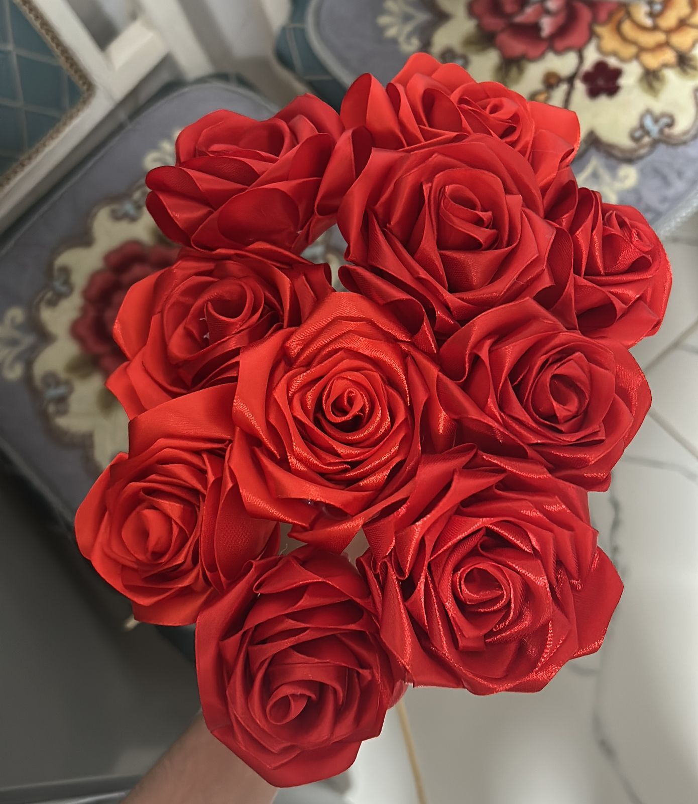
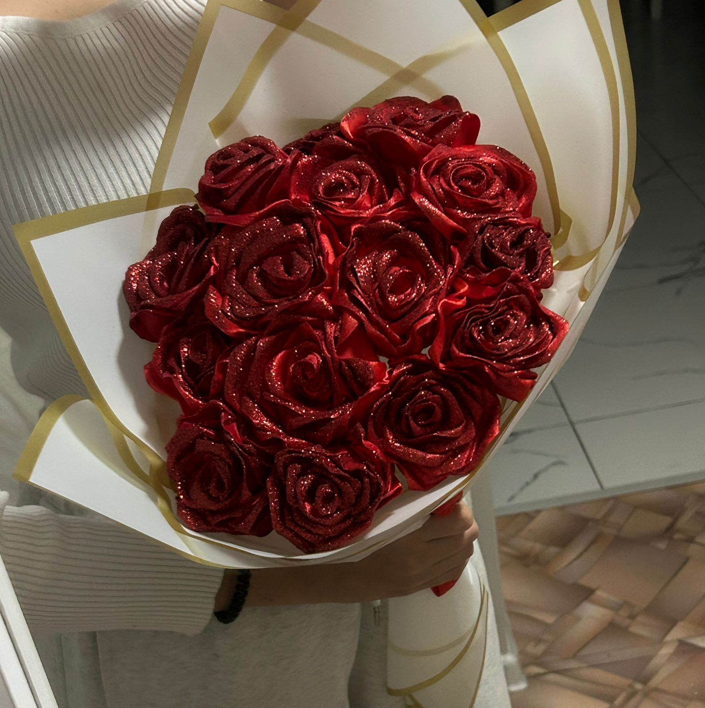
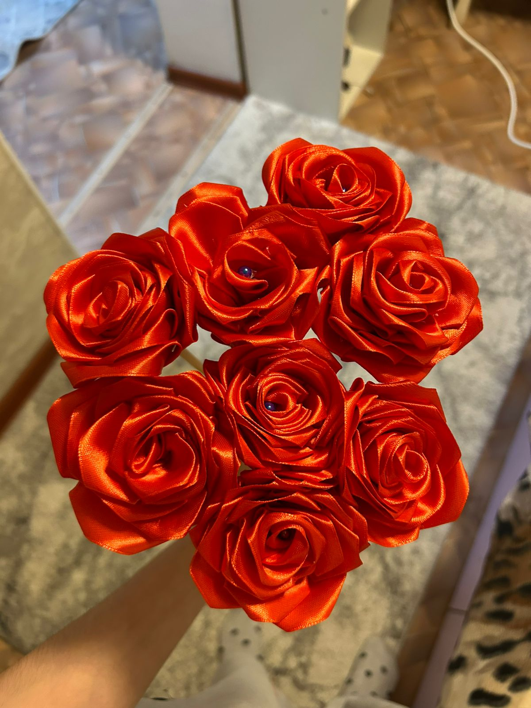

Атласные розы
Красивые атласные розы ручной работы. Сделаны из качественной атласной ленты. Отлично подойдут для подарка, украшения дома или праздника. Каждый букет собирается вручную.
Все розы сделаны вручную из атласной ленты. Каждый лепесток аккуратно сформирован, поэтому букет выглядит очень реалистично. Такой подарок долго сохраняет свою красоту и не вянет.

